"By the gods, Geralt." Dandelion stopped playing, hugged the lute and touched it with his cheek. "This wood sings on its own! These strings are alive! What wonderful tonality! Bloody hell, a couple of kicks and a bit of fear is a pretty low price to pay for such a superb lute. I'd have let myself be kicked from dawn to dusk if I'd known what I was going to get."
Dandelion's soft, mournful singing and the music he raised from the lute's strings, murmuring like a stream flowing over pebbles drifted to her from the chamber at the end of the corridor.
"Songs and ballads" — the musician bowed - "never end, dear lady, because poetry is eternal and immortal, it knows no beginning, it knows no end."

BACK
↩
NEXT
↪
⌂
CHOOSE ANOTHER